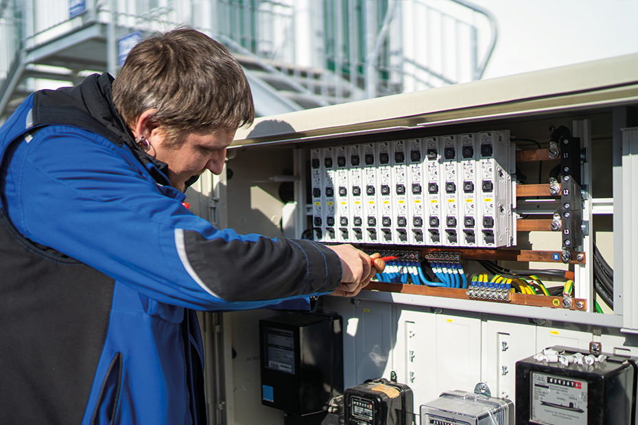

Elektroinstallationen

SICHERE ELEKTROINSTALLATIONEN
rofessionell ausgeführte Elektroinstallationen sorgen für Sicherheit. Als verlässlicher und kompetenter Partner stehen wir an Ihrer Seite. Für Ihr individuelles Projekt in Wien und Umgebung. Von der Planung, Projektierung über die Ausführung bis hin zur Befundung und Dokumentation.
ELEKTRO MAYER: SCHNELL UND FLEXIBEL
Der österreichische Familienbetrieb Elektro Mayer ist Ihr Partner für Neubau, Umbau oder bei Sanierungen. Von der Planung, Projektierung und Ausführung bis hin zur Befundung und Dokumentation. Seit 1964. Unsere langjährigen und bestens geschulten Mitarbeiter stehen Ihnen mit Rat und Tat zur Verfügung.
Setzen Sie bei Elektroinstallationen auf Qualität, normgerechte und nachhaltige Ausführung. Wir freuen uns auf Ihre Anfrage! Mit unserem routinierten und sachkundigen Störungsdienst werden Ihre fehlerbehafteten Anlagenteile schnell und unkompliziert wiederhergestellt.
AUF DER SICHEREN SEITE
Wir sind Experten bei Anlagenprüfungen gemäß ÖVE/ÖNORM E 8001-6-61 bis -63 und unter Berücksichtigung der ÖVE E 8101. Deshalb zählt für uns der Personen- und Sachschutz zu den wichtigsten Schutzgütern. Die Einhaltung dieser Vorschriften ist für uns Pflicht.